About Tanzania
About Tanzania What's the best coffee in the world? Which varieties and coffee beans are highly rated by experts? Which countries produce the most delicious coffee? And most interestingly, what exactly makes the best coffee stand out? Let's answer these questions while also exploring the different types of coffee and how professionals assess the quality of beans and brews.
If you're curious about its origins, check out our article on the history of coffee. It explains where coffee grows naturally, who first brewed it, and what made it so popular. We also discuss the most unique and expensive variety in a blog post about Kopi Luwak coffee (Civet Coffee). And if you want to learn more about a rising star in the coffee world, read our piece on Tanzanian Peaberry.
Coffee hit parade: which coffee is best in the world?
The ratings of the best coffee are compiled by companies operating in this industry, organizations defining the product's quality characteristics, and simply, by coffee shops or enthusiasts of the coffee culture. There isn't a single list that everyone agrees on. However, certain varieties and countries of origin consistently appear in many of these rankings.
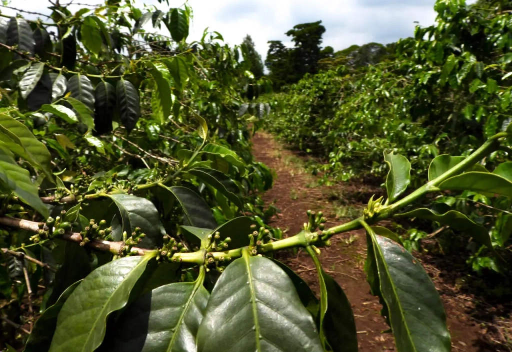
Here's a glimpse at the types of coffee that frequently rank at the top:
Costa Rica Tarrazu:
Costa Rica, a tropical country in Central America, is renowned for its high-mountain coffee with vibrant flavor. Particularly famous is the Tarrazu region. The main source of income for the local population there is sales of whole-bean coffee grown in the highlands.
Guatemala Antigua:
Guatemala, another Central American country, supplies Arabica to the USA. This is the main export product of the country. Grown near the city of Antigua and possessing a rich flavor, Guatemalan coffee often receives awards at specialized exhibitions.
Ethiopia Yirgacheffe:
This African country is not only the birthplace of Arabica coffee but also a supplier of several popular varieties. Yirgacheffe stands out as the highest-grown and most renowned. An Ethiopian coffee called Sidamo is also well-regarded and highly valued.
El Salvador Pacamara:
The most expensive Arabica variety from El Salvador, another Central American country. The Salvadoran Pacas is also well-known, with a significant portion of the country's production coming from the Bourbon variety.
Colombia Supremo:
This coffee, a sub-variety of Caturra, boasts the largest coffee beans in Colombia, a country in Latin America. It's not a specific type but denotes high-quality Colombian coffee, evident to connoisseurs from its name alone.
Jamaica Blue Mountain:
The Caribbean island nation of Jamaica is renowned worldwide for its mountain-grown coffee. Jamaican high-quality coffee is included in the elite varieties. It is exclusively certified by the Coffee Industry Board of Jamaica
Brazil Santos:
This variety is well-known worldwide by coffee lovers and can be considered a classic in the world of coffee. Brazil has remained a global leader in coffee production for over a century and never disappoints when it comes to popular and in-demand varieties of the coffee bean. By the way, South America supplies the largest quantity of coffee beans to the market, compared to the other continents.
Sumatra Mandheling:
This Arabica from Indonesia, representing Asia, boasts a rich flavor profile with spicy-woody undertones. Spices are highly appreciated in this part of the world, and in a way, they even permeate the coffee beans. Indonesian Coffee is highly appreciated by coffee drinkers.
Kenya AA:
Another African country, neighboring Ethiopia. Kenya Kenyan coffee coffee is loved for its pleasant acidity, which harmoniously complements the overall flavor balance. Knowing that Africa is the birthplace of coffee, one isn't surprised by the acclaim for the local product's quality. Just like with Colombia AA, the "AA" in the name indicates large bean size and quality.
Tanzania Peaberry:
Recently, coffee from this African country is increasingly appearing in global rankings. Connoisseurs enjoy the drink made from peaberry coffee grains for its expressive flavor and high density. Coffee from the slopes of Mount Kilimanjaro is known worldwide, and the local peaberry is the most coveted among all varieties.
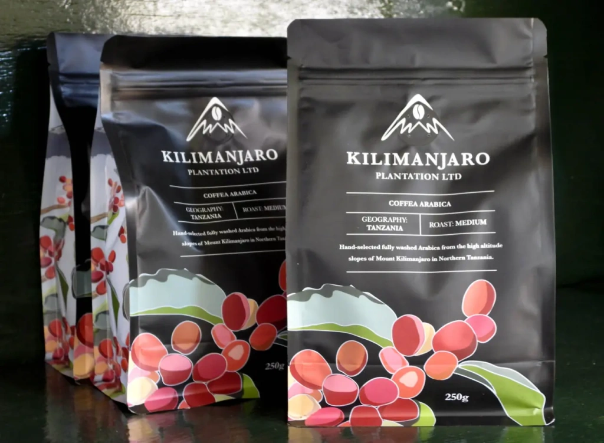
We've listed 10 well-known coffee varieties in random order, often cited by professionals as the best of the best. But any such ranking is subjective. Even the most seasoned coffee aficionados, having tasted hundreds of varieties from all over the world, say that defining the best coffee is a personal matter. In addition, some very famous exotic coffees like Kopi Luwak might actually be quite bland. If you want to find the most delicious coffee according to your taste, try as many drinks from different varieties grown at different coffee farms as possible.
Now we'll try to understand what makes exceptional coffee so good. To do this, let's look at the types and varieties, and find out what conditions affect the ripening of coffee berries. Reading our guide, you'll understand that Arabica is not a coffee variety, learn how exactly altitude affects the quality of coffee berries, and find out what "body" means in the description of the finished drink in the words of cup tasters. In addition, we’ll take a look at cup tasters and their profession.
Types and Varieties of Coffee
Coffee is a genus of woody plants found in the wild on two continents: Africa and Asia. When people began to cultivate coffee, South and North America also welcomed coffee plants. Wild evergreen coffee trees grow up to 10–15 meters tall, but cultivated trees are often called bushes because their height does not exceed 2 meters—for the convenience of bean picking.
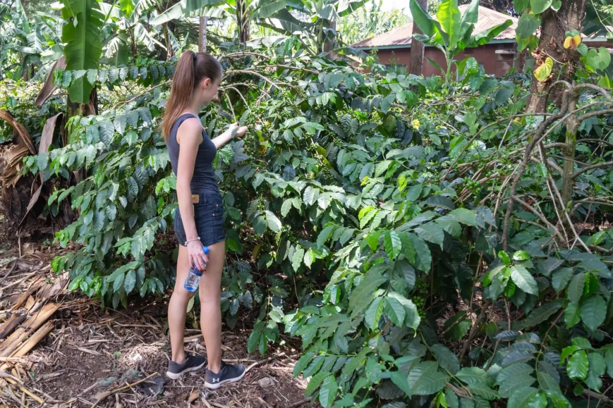
All parts of the coffee tree contain caffeine—a natural alkaloid that, when ingested by humans, produces an adrenaline-like effect. When we consume caffeine, our heart rate increases, blood vessels dilate, the entire nervous system is stimulated, and the body and brain's performance improves. Coffee is made from processed fruits of these trees. Many people like to start their day with coffee because the drink invigorates and quickly brings the brain to a working state.
Types of Coffee
There are over 120 species of coffee trees in total. People predominantly cultivate two of them: and , to put it simply. Arabica is the most common coffee tree in the world, from which coffee fruits are obtained. The common name for coffee fruits is beans, although technically they are berries.
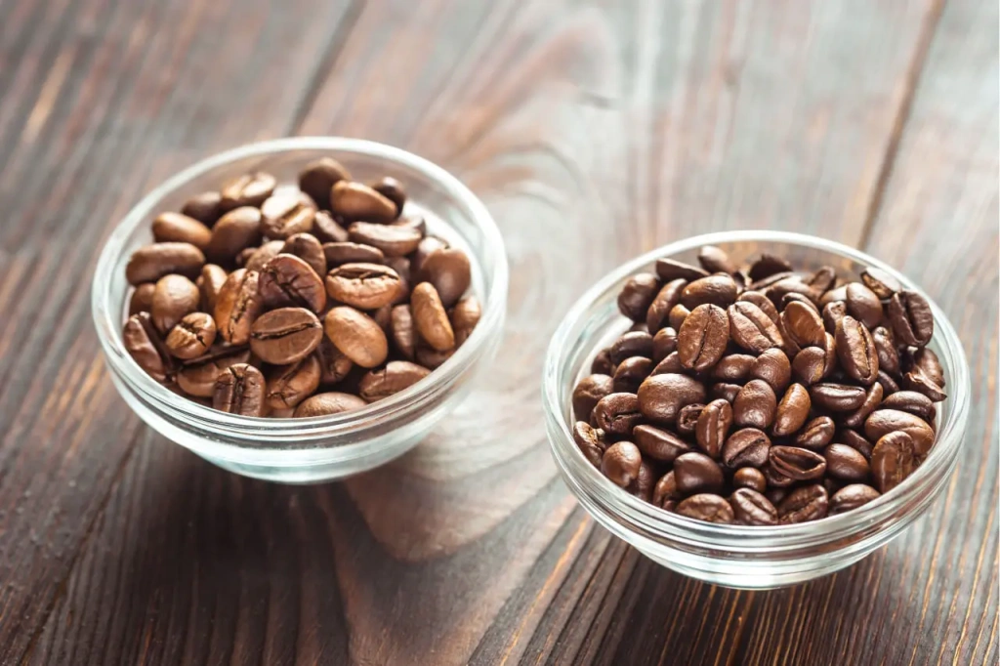
Both Arabica and Robusta account for almost all coffee beans used to make the drink. In some sources, you may come across information that the ratio between Arabica and Robusta is 80% to 20% or 70% to 30%, but these numbers are outdated. According to the report for the , Arabica accounted for about 56%, while Robusta accounted for the remaining 44%. Moreover, Robusta production has been rapidly increasing in recent years. The main reason is climate change, which leads to a reduction in areas under Arabica cultivation. This variety is more finicky and more susceptible to diseases than the hardier Robusta.
Brazil is the leader in Arabica production, while Vietnam is the leader in Robusta. It's enough to say that Brazil supplies about a third of all coffee entering the global market. Brazil has held the lead in this industry for 150 years. By the way, in the country itself, it is also consumed, and more than anywhere else in the world — 97% of Brazilians drink coffee. As for Vietnam, it accounts for about 40% of all Robusta shipments. Vietnamese coffee is known to be strong and energizing.
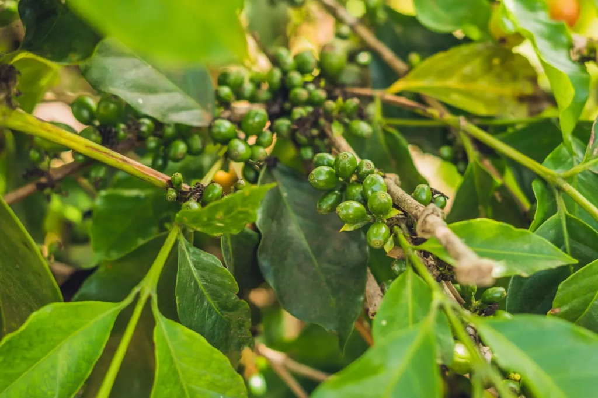
In addition to Arabica and Robusta, people cultivate 8 more species of coffee trees, but it's worth knowing only three of them. These are Liberica, Excelsa, and Stenophylla. Drinks made from them are rarely encountered, as the total share of all these species accounts for only 1.5% of all coffee produced in the world.
We've covered the types of coffee. Next in the hierarchy are subspecies or varieties of coffee. Often these are so-called cultivars, artificially bred subspecies of coffee trees. Varieties of Arabica include Blue Mountain, Bourbon, Kent, Geisha, Mocha, Typica, Java, Kona Coffee, and so on. Arabica has many varieties. Robusta has them too.
Coffee varieties
Finally, we've reached the coffee varieties. Let's provide a few examples. There's the Brazil Bourbon Santos variety, which we mentioned in the top-rated list. Bourbon is a type of Arabica. Santos is a port city in Brazil through which coffee beans are exported, indicating the growing region. So, the name Brazil Bourbon Santos indicates that it's Arabica beans from plantations in the Brazilian state of São Paulo. This is the principle behind naming coffee varieties — it's important to specify a particular type of coffee and the region where it was grown. Professionals will immediately understand the quality of the variety.
But this isn't a universal rule. For example, there's the Arusha variety. It's a type of Arabica — Typica, named after the region of Tanzania where this coffee is grown. We're talking about the slopes of Mount Meru in the Arusha region. But this same variety is also grown in Papua New Guinea. And there are varieties whose names reflect the unique conditions of their cultivation or processing. A good example is the Malabar Monsooned Arabica and Malabar Monsooned Robusta coffees. Their names not only reflect the region — the Malabar Coast of India — but also the method of dry processing, during which the beans are exposed to the prolonged influence of local monsoon rains and winds.
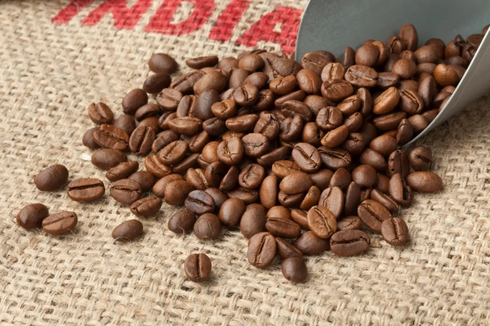
The Blue Mountain coffee is very well-known, it’s one of the most delicious and expensive coffee varieties in the world. It's Typica — a type of Arabica. Blue Mountains is the name of the mountains in eastern Jamaica where these coffee trees were once cultivated. Now the Blue Mountain varietal is grown not only in Jamaica but also in Hawaii, Haiti, and even in Africa: in Cameroon and Kenya. The original Jamaican variety is called Jamaica Blue Mountain. Regional affiliation in the name of a specific variety is very important.
There are a total of 2–3 thousand coffee varieties in the world, spread across numerous coffee countries.
Coffee characteristics: what makes coffee the best
When describing the taste and aroma of a coffee drink, the following terms are used:
- Body of coffee;
- Acidity;
- Bitterness;
- Sweetness;
- Aroma;
- Aftertaste.
The combination of taste and aromatic characteristics of a coffee drink creates a delicious and balanced beverage. Good coffee has a balanced taste, meaning there isn't one standout characteristic. The coffee drink may taste too sour, bitter, or flat when using low-quality beans.
What is the body of coffee?
Understanding the body of coffee is essential for appreciating its taste and texture. When we talk about the body of coffee, we're referring to its physical characteristics felt in the mouth while drinking. These include density, heaviness/lightness, richness, and how the coffee feels on the palate. You can often hear this term discussed in coffee shops and among coffee culture enthusiasts.
Light-bodied coffees have a delicate texture with few oils and solid particles. They flow easily on the tongue and are often described as smooth or subtle. This lightness is common in coffees grown at lower altitudes or drinks that are diluted with water. It's a matter of personal preference; some enjoy the lightness, while others prefer more density.
Medium-bodied coffees strike a balance between light and heavy. They have a moderate density, offering a satisfying mouthfeel without being overwhelming. A medium body is often achieved by brewing naturally light coffee without a paper filter. Using a filter during brewing can soften the drink and retain solid particles, making it more medium-bodied.
On the other hand, heavy-bodied coffees are dense and viscous, with plenty of oils, fats, and proteins. Those high-quality beans often come from coffee trees grown at high altitudes, where they develop complex flavors and textures. These coffees can feel oily or syrupy on the palate, providing a robust and intense drinking experience. The brewing method is important here too. If you want to taste the a cup of coffee with the heaviest body, try to drink espresso.
In summary, the body of coffee refers to its mouthfeel, which varies from light and delicate to medium and satisfying, all the way to heavy and robust.
Good coffee leaves a silky, creamy, and smooth sensation in the mouth, while bad coffee may be astringent or leave a dry, dusty feeling on the tongue.
What is coffee acidity?
When discussing acidity in coffee, it's not about pH levels or heartburn. We're referring to the perceived taste. Cup tasters often talk about the brightness of coffee, which is closely related to the drink's acidity. Generally, the higher a coffee grows, the more acidic its beans are. Additionally, washed coffee tends to be more acidic than naturally dried coffee.
Acidity is responsible for the taste diversity of coffee. It is within this flavor characteristic that distinctive floral and berry undertones reside, giving the beverage its brightness. Such acidity can range from citrusy notes to floral tones or possess a nutty aftertaste. By the way, acidic coffee is considered the healthiest as it contains organic acids with antioxidant properties.
Apart from elevation, processing method, and roasting level, the brewing method also affects coffee acidity. A quick brew with low water temperature emphasizes organic and fruity acids, resulting in a pronounced brightness. Longer brew times or higher water temperatures dissolve medium and heavy compounds, adding additional flavors like chocolate, vanilla, or woody notes, and reducing acidity. For example, using a French press will result in more full-bodied coffee, while an espresso machine will give you a strong black coffee with a bold flavor.
Roasting can lower the natural acidity of coffee beans. The darker the roast, the lower the acidity, as acids simply burn off during the process. Milk can also reduce acidity when added to coffee. Some even add chicory to coffee to achieve the same effect.
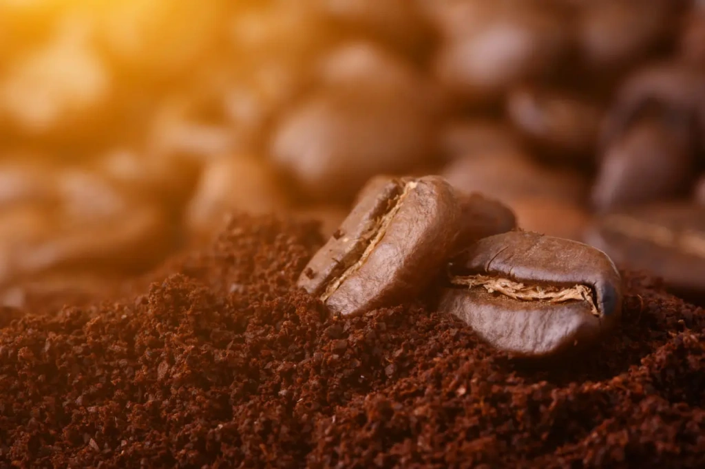
What is coffee bitterness?
It's one of the primary tastes experienced by most people. While people in the West typically recognize four main tastes, people in the East recognize .
Bitterness is felt at the back of the palate, leaving an aftertaste. It is directly associated with caffeine.
Robusta coffee is typically more bitter than Arabica due to its higher caffeine content, roughly double that of Arabica, and contains about half the sugars. Beans with a dark roast also tend to be more bitter. There's a spectrum to bitterness; within it, coffee is enjoyable. Coffee with low bitterness may seem flat, while excessively bitter coffee is unpleasant. This reflects our natural instincts – most bitter plants are poisonous.
What is coffee sweetness?
When people talk about sweetness as one of the six primary parameters of coffee, they refer to the natural sweetness, not added sugar. It is provided by sugars, glycols, alcohols, and amino acids present in the beans.
As we mentioned before, processing methods impact sweetness: dry processing enhances it, while wet processing lowers it. During dry processing, fermentation occurs, causing sugars from the pulp and husk to cling to the bean, altering flavors. This process can be controlled to craft unique coffee profiles.
The roasting process determines the specific character of coffee's sweetness: light roasts offer fruity sweetness, while darker roasts lean towards caramel-chocolate flavors.
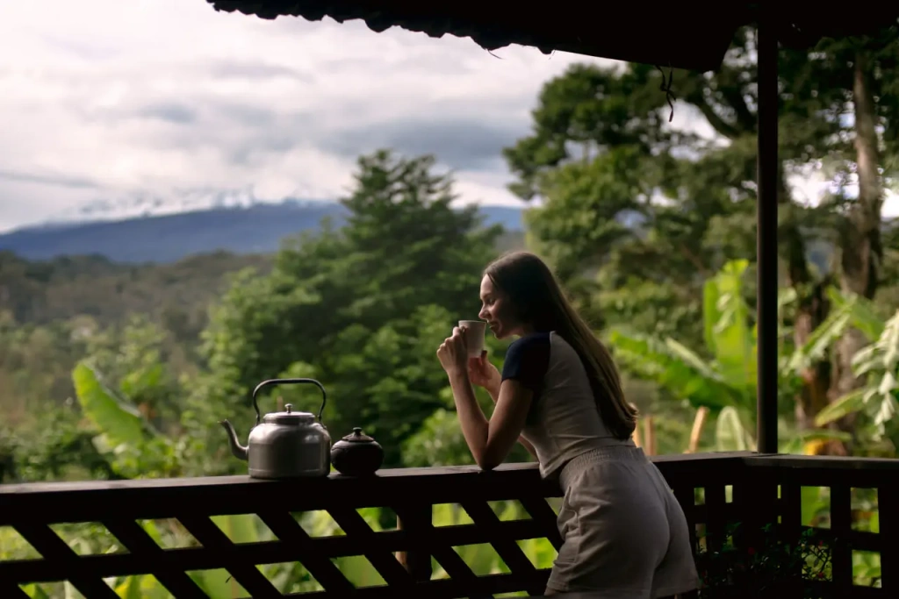
What is coffee aroma?
Here it's simple: aroma is the smell of the brewed drink. Only the basic 4-5 taste profiles can be distinguished on the palate. The tongue operates based on these "coarse" taste perceptions. However, our nose detects many more nuances, which is crucial in the case of coffee drinking - it contains over 800 aromatic compounds. Of course, not even a refined gourmet or a professional taster can capture them all, yet even an untrained person, by paying attention to sensations, can grasp the richness of coffee aroma.
By combining all nuances into one descriptor, you can identify a primary characteristic that defines a particular coffee. It could be floral, fruity, herbal, nutty, or smoky aroma. Interestingly, the smells we perceive affect how we perceive the taste of the drink. It seems that experiencing coffee is a rather complex process involving numerous receptors, organs, and neurons processing all these signals.
True connoisseurs seek out the most aromatic coffee beans, not in regular stores where coffee in packaged bags may sit for too long, but directly from coffee roasters, purchasing it immediately after roasting. In this case, coffee maximally reveals its taste and aroma potential. Different roasting methods combined with brewing techniques gave rise to famous styles of coffee beverages, such as Parisian coffee or Turkish coffee.
What is coffee aftertaste?
After we finish drinking coffee, its taste lingers in the mouth for quite some time. It is detected on the back of the palate and can be felt for up to 15 minutes after the last sip.
Technically, the aftertaste is not a taste but an aroma - some persistent aromatic molecules linger in the nasopharynx. They enter the nose not through the nostrils but from the "backyard", thereby activating retro-nasal olfaction.
Light aromas disappear first, while molecules of fats and oils linger longer, forming a bitter aftertaste with roasted notes. Typically, the aftertaste is rougher and less pleasant than the very first sip of coffee. We judge coffee based on whether its aftertaste is pleasant or unpleasant.
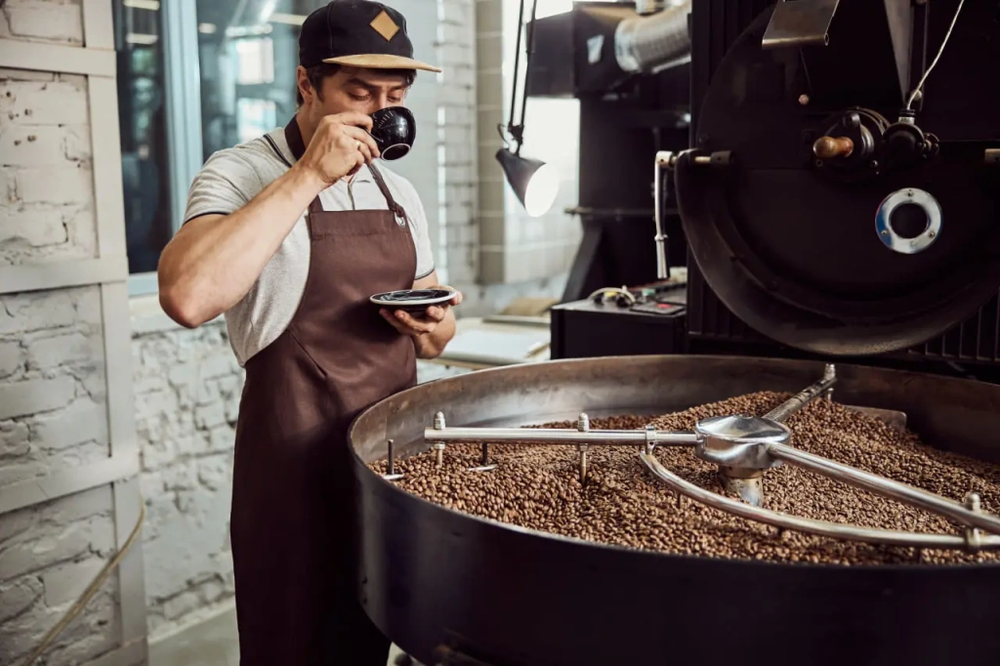
Cup tasters are how coffee is evaluated
We’ve talked about the basic set of descriptive characteristics that can describe a particular coffee. It is with the help of these six parameters that Q-graders evaluate coffee. These are the professional experts who study coffee beans and taste the finished drink, ultimately assigning each batch of coffee a score on a 100-point scale. The final rating is given after cupping - coffee tasting.
There are many criteria for evaluating coffee. This includes sorting by variety, altitude, physical bean size, separation into standard and peaberry, processing method, presence of defects, the ratio of underripe and overripe beans, and so on. During cupping, the body of the coffee, acidity, bitterness, sweetness, aroma, and aftertaste are determined. We have only briefly touched upon the most well-known parameters, but experts assess numerous subtleties, details, and flavor notes.
Cupping is very interesting. Everything is important in it: the material of the cups, the time between roasting and tasting, the roasting time (8-12 minutes for specialty coffee), water temperature (strictly 93°C), water mineralization level, time between brewing and tasting with a spoon (8 minutes), limited time for describing taste sensations (20 minutes). Everything is regulated: from the amount of coffee (8.25 g per 150 ml) to the movement of the spoon when removing the foam. In general, the regulation is strict, and cup testers are highly qualified. It takes no less than 10 years to train for this profession.
Batches of coffee that score 80 points or higher are considered specialty. There is no such thing as a certain variety from a specific supplier always receiving the same score, especially by default. Each batch is rigorously tested every time.
In general, the world of professional coffee enthusiasts and coffee culture is very interesting. We have talked about the most important characteristics by which coffee is evaluated so that you can understand what makes a particular coffee good and why. Without this knowledge, terms like "coffee body," "acidity," and "density" won't mean much to an outsider.
And now let's take one of the varieties from our hypothetical rating and see, based on it, what conditions of coffee cultivation and subsequent processing guarantee that it will make it to the list of the best. Let's look at Tanzanian coffee.
Coffee from Tanzania. Why it's so good
Let's list all the factors that put it at the top of the coffee taste rankings. Although this country does not produce such a large volume of beans, accounting for only of the world's coffee production, it still supplies a high-quality product. This is evidenced by premium-grade coffee batches, the high cost of Tanzanian peaberry, and Tanzanian coffee making it into the . The coffee trade is also increasingly important in the country.
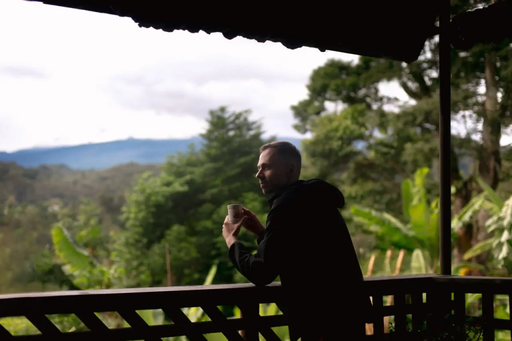
Here's what speaks in favor of coffee grown in Tanzania:
- Suitable altitude: the average elevation ranges above sea level, providing Tanzanian coffee with the status of "highland".
- Fertile volcanic soil: the best coffee is grown on the slopes of Mounts Kilimanjaro and Meru
- Coffee trees are commonly grown in the shade of banana plants, which beneficially affects the taste of ripening berries
- Hand-picking of coffee berries: this approach allows for better sorting of harvested fruits, separating those that will enter the premium category
- The harvested Arabica is predominantly processed via the washed method, which prevents extraneous odors
- Distinctive taste, full body, and perfect acidity: Tanzanian coffee, thanks to these characteristics, makes it into the list of the best in Africa
Elevation above sea level
The quality of the best coffee berries is influenced not only by the elevation itself but also by the climatic conditions accompanying the growth process of coffee trees. These include lower temperatures with less variation, abundant rainfall, and constant access to sunlight. Additionally, it is also important to shield the plants from direct sunlight that can be damaging.
The slow ripening of coffee beans at high altitudes, where the oxygen in the atmosphere is slightly less than at lower altitudes, makes them denser. And density directly affects taste. At high elevations, plants struggle a bit more, so they naturally put all their energy into the fruits.

The best coffee in the world is highland coffee. That's why almost all top varieties are grown high on mountain slopes.
Suitable temperature
The temperature range of 17–23 °C is considered ideal for coffee. At higher temperatures, there is a risk of various defects caused by coffee rust and the activity of the coffee borer. This temperature range is maintained for almost the entire year on the slopes of Kilimanjaro and other Tanzanian mountains at an altitude of around 1400 meters above sea level.
Lower temperatures often lead to temperature fluctuations, hindering the ripening of ideal coffee berries. Stable warmth, or the so-called "climatic cushion," ultimately ensures a balanced taste of the beans.
Abundance of rain and mountain rivers
There is more precipitation in the mountains. If you compare the slopes of Mount Kilimanjaro and the plain of Sanje, you will see a huge difference. The slopes and foothills are literally engulfed in greenery, impressing everyone who comes here for the first time. Look, for example, at the photos of our hotel, Aishi Machame, which is located on the slopes of Kilimanjaro, at an altitude of 1150 meters above sea level. Conversely, there is little vegetation on the plain, rivers dry up, a dry climate and rocky wilderness are characteristic. The distance between these zones is small—you can drive by car in about 30–40 minutes.
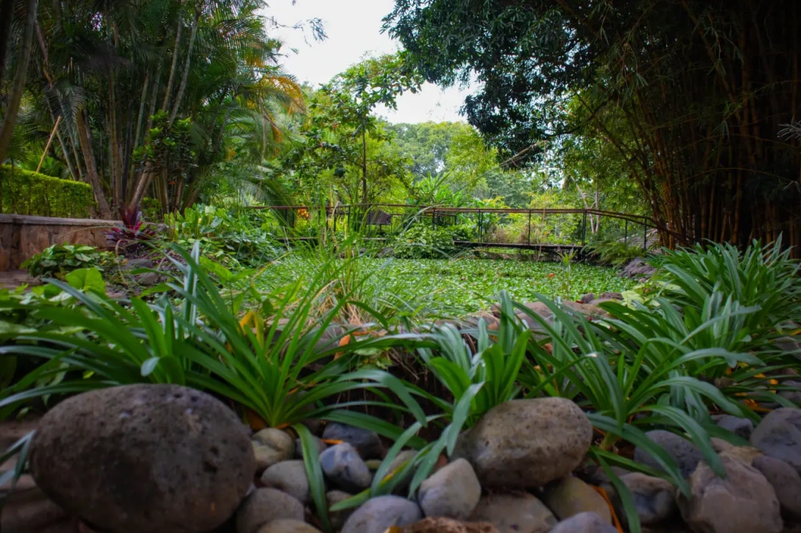
Another important point is good drainage on mountain slopes. Excess water is harmful to coffee trees when it stays on the ground during rains. On a sloping plantation, it simply flows down, and the plant takes only what it needs. This natural limitation makes the fruits denser.
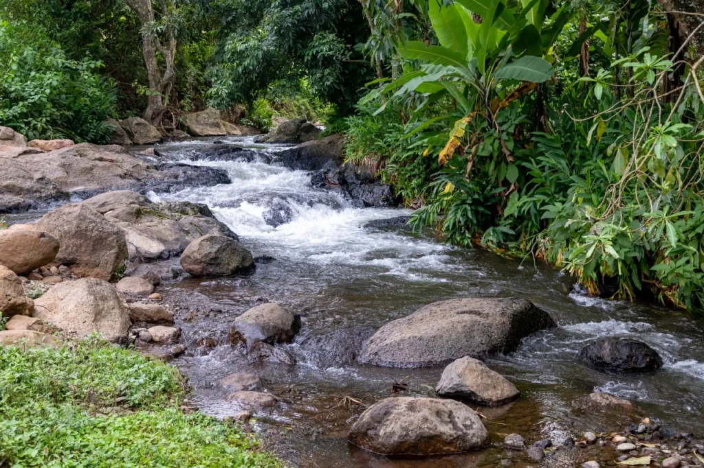
Access to sunlight
The abundance of warmth and sunlight at high altitudes nourishes the soil, coffee trees, and other plants, creating a microclimate on the plantation. Direct sunlight is harmful to coffee, so many plantations are interspersed with bananas in a checkerboard pattern. Here in Tanzania, this is a very popular way to provide shade to coffee bushes. The sprawling leaves of banana trees create the perfect atmosphere for ripening coffee berries.
Fertile soil
The fertility of the soil on the slopes of Kilimanjaro and Meru is due to its volcanic nature. Any volcanic soil, called andosol, contains potassium, calcium, boron, phosphorus, and other elements. Potassium directly affects the coffee berry, shaping the taste of coffee. Calcium promotes root and leaf growth of the plant, and helps the berry ripen faster. Boron has a beneficial effect on yield. Phosphorus also affects the taste and aroma of coffee.
Handpicking
The best coffee beans for roasting are obtained from plantations where coffee berries are picked by hand. In this case, it is possible to sort the berries by the degree of ripeness. With careful handling, they are collected in several passes—the first time only fully ripe ones are harvested, while the rest are left on the branches to be picked as they ripen. But not all plantations pick this way. Relatively often, a method called stripping is used—where all berries are stripped from the branch, and sorting is done at the next stage. Unfortunately, in this case, unripe and overripe coffee beans may end up together. Underripe coffee beans are called quakers and are considered a serious defect.
Mechanized labor is rarely used because it's simply inconvenient — machinery can't navigate mountain slopes. However, it is practiced in some places. For example, the most mechanized coffee-producing country is Brazil. In Africa, all coffee is hand-picked, which is a plus.
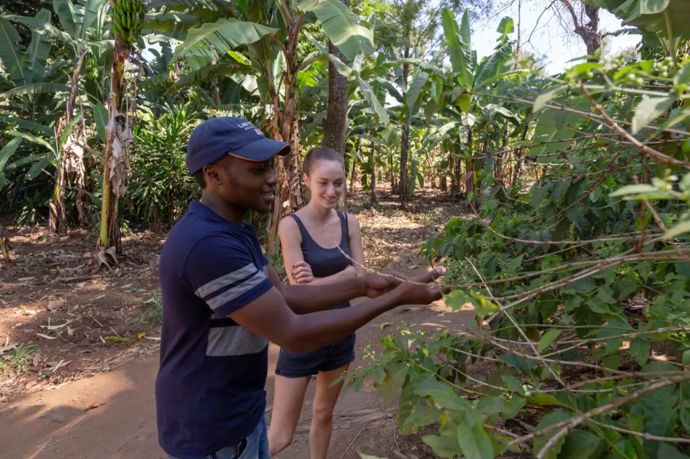
Washed Processing
Almost all Arabica from Tanzania undergoes the so-called washed processing, one of the two main methods. The other is called dry.
Washed processing involves a lot of water. First, the berries are placed in tanks of water to naturally remove the skin and mucilage, as well as for empty beans with low density to float to the surface. Then, the fermented beans are thoroughly washed and sent for drying, aiming for a moisture level of around 10%. This is the most optimal processing method, preserving the bean's pure taste without extra additions.
Washed processing enhances acidity and overall makes the coffee smoother and more balanced in flavor. On the other hand, dry processing, also known as natural processing, increases sweetness. This occurs due to the prolonged contact of the beans with slowly peeling mucilage.
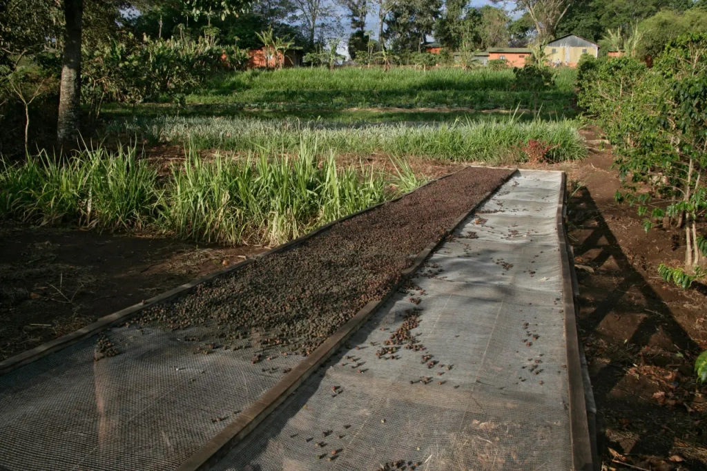
Extended may lead to a taste defect. This problem arises when coffee beans are not consistently spread on prepared surfaces and instead are dried directly on the ground. Consequently, the coffee develops a distinct earthy taste, significantly compromising the final product. Moreover, it's essential to manually rotate the beans during drying to prevent issues like rotting, fermentation, and mold growth, particularly during rainy periods. However, adequately dried coffee offers a richer and more intricate flavor. Nevertheless, aficionados typically favor washed coffee.
Roasting
The final step with processed and sorted beans is their roasting. Roasts can be light, medium, medium-dark, and dark. The latter three are suitable for Tanzanian coffee, with medium roast being the most common.
In Tanzania, coffee isn't roasted; this is done by roasting companies, typically in the countries where the coffee will be consumed. In some cases, unroasted green coffee is sold as a food supplement.
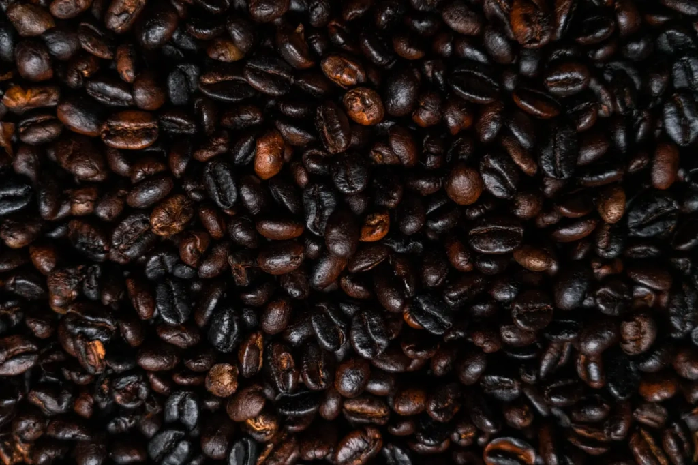
Let's discuss the timelines for consuming already roasted coffee. This is crucial as it greatly affects the taste of the beverage.
The ideal time for consuming roasted coffee beans is within the first two weeks when the coffee can be considered freshly roasted. From two weeks to two months, coffee can still be consumed, although it begins to lose its flavor and aromatic qualities. From two to four months after roasting, connoisseurs will refuse such coffee, but if there's nothing else available, it can still be consumed, albeit with a grimace. This is why many coffee lovers prefer buying from local roasters or coffee shops.
After four months, regardless of how well you've stored it, coffee completely loses its original properties and becomes stale. The product is considered spoiled and should be discarded. Never store coffee — drink it in the first days and weeks after roasting.
The country of origin is responsible for everything except roasting. If all conditions are met, the result is premium class coffee. Adequate altitude with access to sun and rain, ideal air temperature, mineral-rich soil, professional care for plantations, "smart" manual picking, washing, and sun drying — if everything is done correctly at each stage, the coffee will be classified as premium. This applies not only to the listed varieties but to any coffee handled properly.
An exemplary approach to growing and processing coffee in Tanzania is Kilimanjaro Plantation. We've visited the plantations and production facilities of this company several times with excursions and have always been impressed by the impeccable work of the professionals. Rows of planted coffee trees, a large sorting and washing system, professional drying tables — all processes are well-organized and supervised by high-class specialists. You can see this for yourself by taking an excursion to Kilimanjaro Plantation.
Lastly, we'll remind you that the best coffee is the one that you enjoy the most. Don't be afraid to try different varieties and drinks. May you always have good coffee at hand and enjoy it sip by sip!
All content on Angelino Adventures is created with expert insights and thorough research, in line with our Editorial Policy.


Want to know more about Tanzania adventures?
Get in touch with our team! We've explored all the top destinations across Tanzania. Our Kilimanjaro-based adventure consultants are ready to share tips and help you plan your unforgettable journey.
 Tanzania Safaris
Tanzania Safaris
 Kilimanjaro and other mountains
Kilimanjaro and other mountains
 About Angelino Adventures
About Angelino Adventures
 About Tanzania
About Tanzania